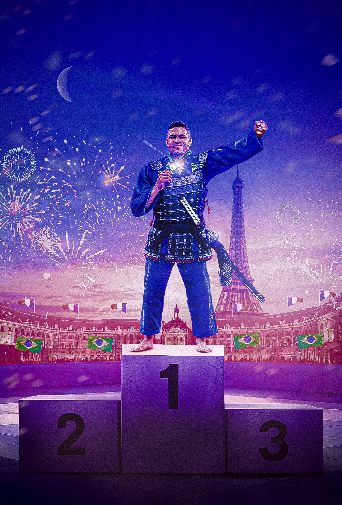
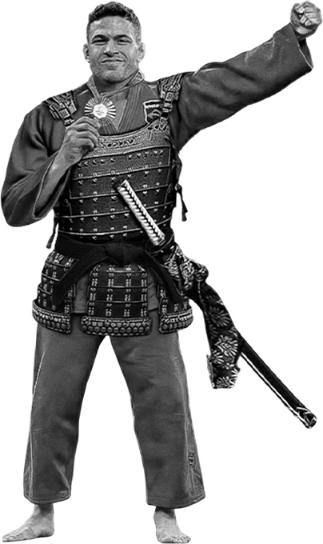
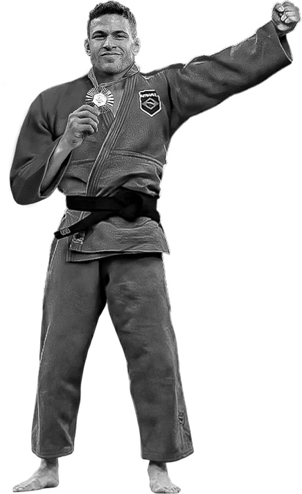
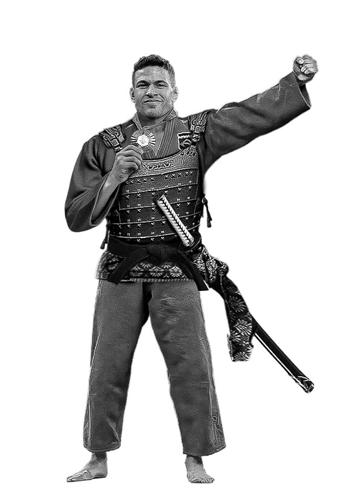
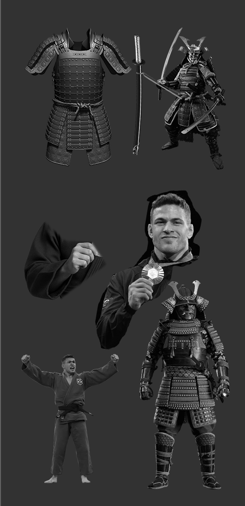

Três variações de personagem desenvolvidas a partir de photobash, utilizando elementos de referência para compor diferentes versões visuais. O projeto explora desde a forma base, sem armadura, até interpretações alternativas com armaduras e detalhes distintos, ressaltando a versatilidade no design e na construção de conceito.





Created by Arthur morais — 2025 All visuals developed in Photoshop